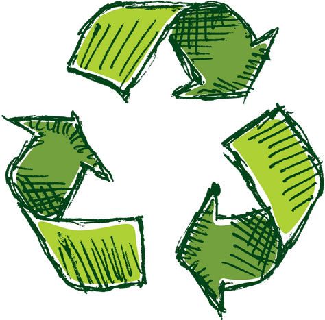

Przyjmuje telefony, które lata swojej młodości mają już za sobą.
Poddamy je recyclingowi, tak żeby ich wpływ na środowisko był jak najmniejszy.
Zamiast trzymać niepotrzebne telefony w szufladzie, oddaj je nam. Sprawne urządzenia zyskują drugie życie, a zepsute poddajemy recyclingowi w sposób bezpieczny dla środowiska. Włącz się w działania na rzecz ochrony planety.
Jak to działa?
Klienci indywidualni
Oddaj nam swój stary, nieużywany telefon, a my zajmiemy się jego bezpiecznym recyklingiem. Sprawne urządzenia zyskują drugie życie, a zepsute przetwarzamy w sposób przyjazny dla środowiska, minimalizując ich negatywny wpływ na planetę.
Firmy
Oferujemy kompleksową utylizację elektroodpadów firmowych – odbieramy zużyty sprzęt elektroniczny, transportujemy go i przetwarzamy zgodnie z obowiązującymi normami.